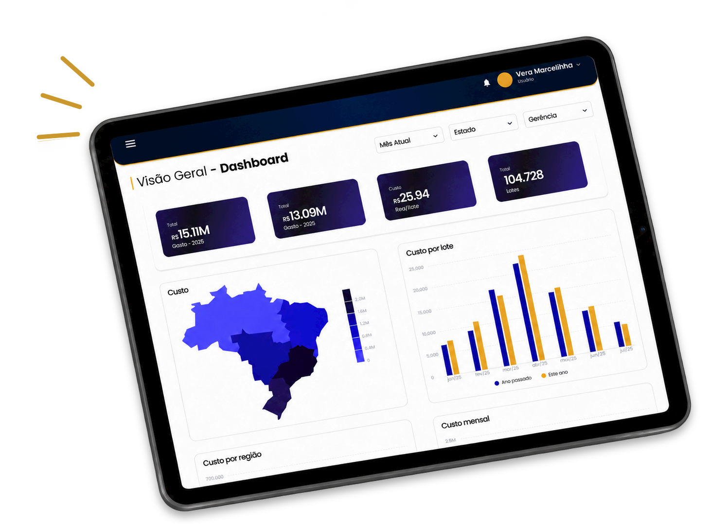
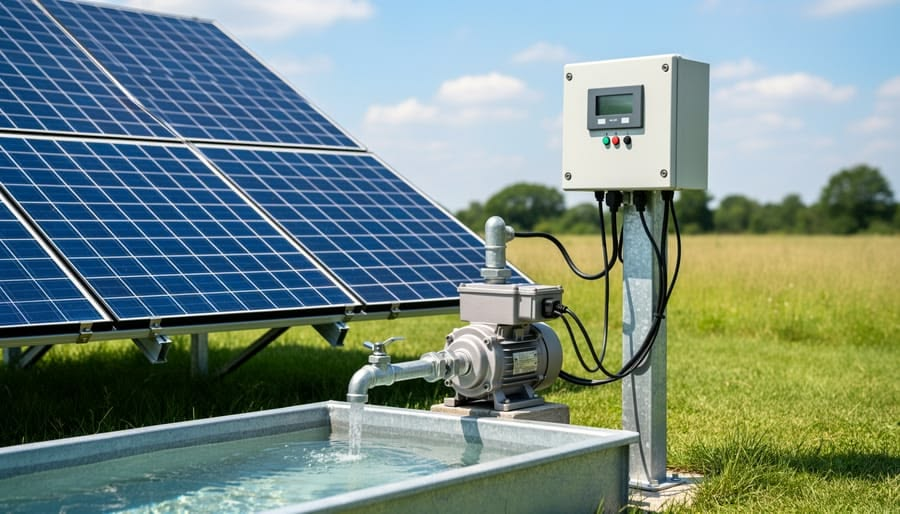
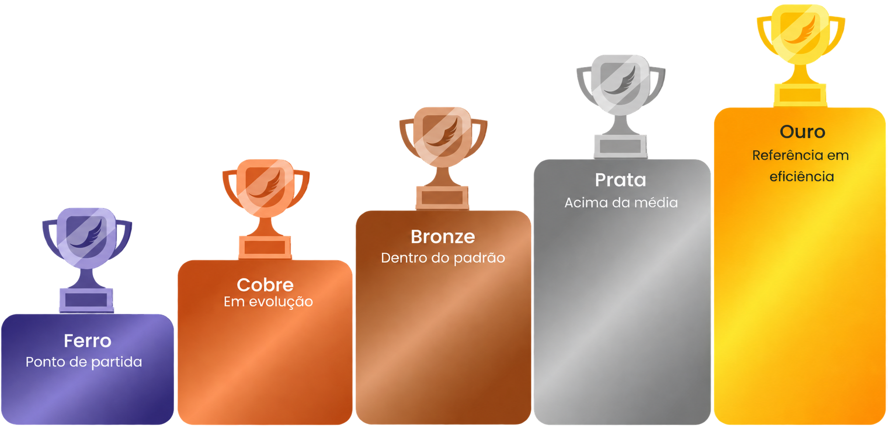

Desperdício na cadeia
O consumo de recursos está distribuído por diversas propriedades fornecedoras. Sem monitoramento individualizado, o uso ineficiente de água e energia gera desperdícios que se acumulam ao longo de toda a cadeia produtiva.

Monitore consumo, acompanhe indicadores e evolua
no ranking de sustentabilidade.
O problema começa onde os dados não chegam.

Substitua cálculos imprecisos por dados primários de consumo direto de cada propriedade rural.
Identifique instantaneamente os produtores mais eficientes para otimizar sua tomada de decisão e compras.
Acompanhe o progresso das suas metas ambientais com relatórios integrados de toda a sua rede de fornecedores.
Registre cada lote e acompanhe os dados da produção em um só lugar.
Estime custos e receitas para entender a rentabilidade de cada lote.

Acompanhe o consumo de água e energia e encontre oportunidades de economia.
Compare o desempenho das granjas e reconheça quem adota práticas mais sustentáveis.
Receba alertas sobre indicadores e prazos importantes para agir no momento certo.
Defina objetivos ambientais e acompanhe o avanço dos indicadores da sua granja.
Visualize os principais indicadores em painéis claros para apoiar suas decisões.
Utilize rankings para gerenciar seus integrados e ter uma melhor visualização de
seus gastos. Cada estado brasileiro possui seu próprio ranking.

Visualize a eficiência real de cada
fornecedor, sem estimar gastos indiretos.
Identifique quem gasta mais e traz maior
prejuízo ambiental.
Priorize decisões de compra com base
em dados primários.
Reconheça publicamente os integrados
mais eficientes.
Ideal para quem quer experimentar nossos serviços.
R$ 3500,00 fixo + 5 reais por integrado, por mês.
Agendar planejamentoIdeal para quem busca acompanhar nossos serviços por mais tempo.
R$ 3500,00 fixo + 5 reais por integrado, por mês. Com 5% de desconto.
Agendar planejamentoIdeal para quem quer aproveitar nossos serviços de forma contínua.
R$ 3500,00 fixo + 5 reais por integrado, por mês. Com 10% de desconto.
Agendar planejamentoSim, o sistema funciona de forma offline, considerando as limitações de conectividade nas regiões rurais. Os dados informados pelo produtor ficam salvos no próprio celular e são sincronizados automaticamente assim que houver conexão disponível.
O produtor conta com a biblioteca de eBooks Explorer, que reúne artigos e vídeos com dicas práticas sustentáveis. Ele também pode tirar dúvidas com o assistente virtual Midas, acessar o canal de consulta da equipe técnica e receber notificações com informações automáticas caso seja identificado um consumo elevado.
Quando o sistema detecta que uma propriedade apresentou um aumento incomum no consumo de água ou energia entre ciclos, ele envia notificações automáticas ao produtor com orientações técnicas e atalhos para a aba Explorer. Ao mesmo tempo, o painel de alertas da empresa sinaliza a anomalia para que a equipe de campo possa oferecer suporte técnico.
Sim, o aplicativo possui um chatbot integrado chamado Midas. Para o produtor rural, ele responde a dúvidas rápidas sobre o uso do aplicativo, orienta sobre as funcionalidades e auxilia no registro de lançamentos do dia a dia. Para a empresa contratante, o Midas atua como um canal digital de consulta para fornecer informações sobre a situação geral e o desempenho no ranking de fornecedores.
A eficiência do produtor não é calculada pelo consumo bruto total, mas pela intensidade de uso de recursos (gestão de água e energia dividida pela quantidade de animais entregues). Além disso, os rankings são divididos por estado e organizados em quatro níveis evolutivos (Ferro, Bronze, Prata e Ouro), valorizando tanto os melhores resultados quanto a evolução no tempo.
O engajamento é promovido por meio da gamificação e reconhecimento. À medida que melhora sua eficiência, o produtor avança nos níveis (Ferro, Bronze, Prata e Ouro) e pode ter preferência comercial na compra por parte da empresa parceira.
Sim. O produtor ou gestor da granja pode gerar e exportar relatórios consolidados em formato PDF a qualquer momento. Isso facilita a comparação de práticas sustentáveis, o acompanhamento de dados de consumo ou da gestão financeira interna da propriedade.
Ele resolve a falta de visibilidade sobre o uso indireto de recursos nas fazendas, incentivando o monitoramento contínuo e a redução do consumo de água e energia na cadeia de suprimentos.